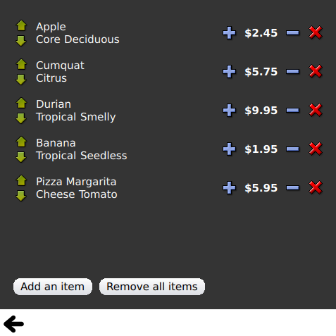

Contents
- GridView and PathView demonstrate usage of these elements to display views.
- Dynamic List demonstrates animation of runtime additions and removals to a ListView.
- Expanding Delegates demonstrates delegates that expand when activated.
- Highlight demonstrates adding a custom highlight to a ListView.
- Highlight Ranges shows the three different highlight range modes of ListView.
- Sections demonstrates the various section headers and footers available to ListView.
- Packages demonstrates using Packages to transition delegates between two views.
- VisualItemModel uses a VisualItemModel for the model instead of a ListModel.
QtQuick Examples - Views
This is a collection of QML model/view examples

This is a collection of small QML examples relating to model and view functionality. They demonstrate how to show data from a model using the QtQuick view types.
GridView and PathView demonstrate usage of these elements to display views.
Dynamic List demonstrates animation of runtime additions and removals to a ListView.
The ListView.onAdd signal handler runs an animation when new items are added to the view, and the ListView.onRemove another when they are removed.
Expanding Delegates demonstrates delegates that expand when activated.
It has a complex delegate the size and appearance of which can change, displacing other items in the view.
Highlight demonstrates adding a custom highlight to a ListView.
Highlight Ranges shows the three different highlight range modes of ListView.
Sections demonstrates the various section headers and footers available to ListView.
Packages demonstrates using Packages to transition delegates between two views.
It has a Package which defines delegate items for each view and an item that can be transferred between delegates.
A VisualDataModel allows the individual views to access their specific items from the shared package delegate.
VisualItemModel uses a VisualItemModel for the model instead of a ListModel.
Files:
- views/views.qml
- views/gridview/gridview-example.qml
- views/listview/dynamiclist.qml
- views/listview/expandingdelegates.qml
- views/listview/highlight.qml
- views/listview/highlightranges.qml
- views/listview/sections.qml
- views/listview/content/PetsModel.qml
- views/listview/content/PressAndHoldButton.qml
- views/listview/content/RecipesModel.qml
- views/listview/content/SmallText.qml
- views/listview/content/TextButton.qml
- views/listview/content/ToggleButton.qml
- views/package/Delegate.qml
- views/package/view.qml
- views/parallax/parallax.qml
- views/parallax/content/Clock.qml
- views/parallax/content/ParallaxView.qml
- views/parallax/content/QuitButton.qml
- views/parallax/content/Smiley.qml
- views/parallax/content/pics/home-page.svg
- views/pathview/pathview-example.qml
- views/visualdatamodel/dragselection.qml
- views/visualdatamodel/slideshow.qml
- views/visualitemmodel/visualitemmodel.qml
- views/main.cpp
- views/views.pro
- views/views.qmlproject
- views/views.qrc
- views/visualdatamodel/visualdatamodel.qmlproject